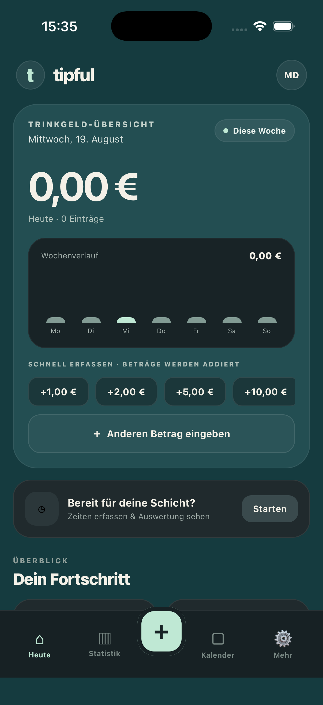

Schnell erfassen
Mehrere frei wählbare Schnellbeträge addieren oder einen eigenen Betrag eingeben.
DEIN TRINKGELD. DEIN ÜBERBLICK.
Trinkgeld in Sekunden erfassen, Schichten auswerten und deine stärksten Tage erkennen – übersichtlich, direkt und ohne Benutzerkonto.

Mehrere frei wählbare Schnellbeträge addieren oder einen eigenen Betrag eingeben.
Start- und Endzeiten festhalten und dein Trinkgeld pro Schicht auswerten.
Wochenverlauf, Kalender und Analysen zeigen dir deine stärksten Tage und Zeiten.
Deine Trinkgeldeinträge bleiben lokal auf deinem Gerät. Ein Konto ist nicht erforderlich.